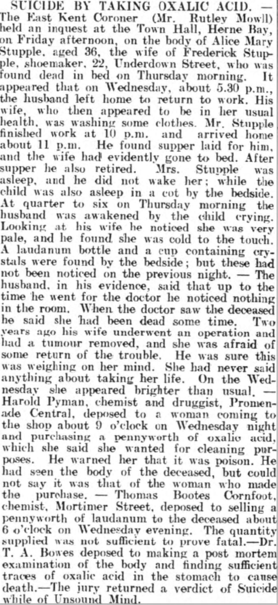

Alice Mary Stupple (née Robinson) 1873 - 1910
[ Home ] | [ Calendar ] | [ Surnames Index ] | [ Family History ]Alice Robinson, the wife of Frederick Stupple (the first cousin three-times-removed on the mother's side of Nigel Horne), was born in Walworth, London, England in 1873<span class="citation">1,2</span> and married Frederick (a bootmaker and repairer with whom she had 3 children: <a href="I2002.html">Ethel Mary Alice</a>, <a href="I2003.html">Margery Ida</a> and <a href="I2004.html">Winifred Lucy</a>, along with 1 surviving child) at Christ Church, Herne Bay, Kent, England on Dec 26, 1895<span class="citation">4</span>. On Mar 31, 1901, she lived at North Street in Herne Bay<span class="citation">1</span>. <p>She died on Oct 5, 1910 at 22 Underdown Street in Herne Bay<span class="citation">3</span> (suicide).
Children
- Ethel Mary Alice was born on Nov 25, 1896
- Margery Ida was born on Jun 24, 1904
Citations
- 1901 England, Wales & Scotland Census - Findmypast (was age 28 and the wife of the head of the household)
- Kent, Canterbury Archdeaconry marriages 1538-1928 - Findmypast
- England & Wales deaths 1837-2007 - Findmypast
- England & Wales marriages 1837-2008 - Findmypast
Media
Canterbury Journal, Kentish Times and Farmers' Gazette - 8 Oct 1910

Kent, Canterbury Archdeaconry marriages 1538-1928 - GBPRS/CANT/M/97074082/1
England & Wales deaths 1837-2007 - BMD/D/1910/4/AZ/000766/019
England & Wales marriages 1837-2008 - BMD/M/1895/4/AZ/000307/167
Kent, Canterbury Archdeaconry marriages 1538-1928 - GBPRS/CANT/M/97074082/2
Family Tree

Generated by Ged2Site. Last updated on Jul 20, 2025